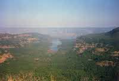
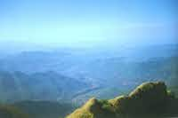
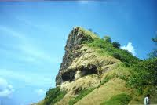

This was my first trek. We left Mumbai on the night of 25th. I was going along with an old friend Amod, who had been there before. He had invited some guys from his college and also from our colony. Actually he was himself going along with a group called `Zongri Hikers'. We all met at Kurla Station and went on to join the group at V.T. Station. Peeyush and V.P. had also come along. Being our first hike me and Peeyush were hardly carrying anything. Feeling a little embarrassed by all those huge bags being carried by the old hands, we mostly kept to ourselves. The Mahalaxmi Express was expected to reach Satara Stn. at around 0410. We were up and sitting in the door by around 0300. In fact we hardly slept. The cold blast of air from the Satara hinterlands used to leave us gasping for breath whenever we put our heads outside the door. We reached Satara Stn. on time. Being a few kilometres away from the town, it was deserted at such an early hour. Our group leader, Sundeep Gokhle, was waiting for us outside the stn. with a Tempo mini truck (He had gone the previous day to hire some private transport). We all bundled into the back and started for Bamnoli Village on the banks of the Shiv Sagar Sarovar ( The Koyna Dam Reservoir ). Actually the journey was very romantic, as I had never traveled in the back of a tempo before. We stopped in the small ghats beyond Satara to pee. It was fun, urinating over the edge of a hill with a lot of other guys. A shooting star added to the dream like atmosphere!. As we neared the Koyna Valley, the landscape got hilly and green. Bamnoli village is a extremely small place, by our standards, but due to its being a ferry point on the reservoir, it assumes importance. We can travel by ferry to Mahabaleshwar to the extreme north end or to Koyna Nagar on the extreme south end of the reservoir (The reservoir mostly runs North-South). We took our breakfast of Jam-Bread-BoiledEgg with Chai at a small hotel near the ST bus stop, while Sandeep arranged for the ferry ride. It takes anywhere between one hour to one and a half hour to get to the Vasota landing point from Bamnoli. The waters are very calm and the ferries very slow. What with the heat and the monotonous drone of the ferry's diesel, I felt very drowsy and nodded off. The others were generally lazing around and feeling sleepy as well. Before I nodded of, the scenery was low hills which were half submerged by the dam waters. The vegetation was sparse and we could see a few goats grazing the yellowing grass. When I woke up, we were at the entrance of narrow and densely forested valley. Above the spot for which we were aiming, rose the forbidding Kille Vasota. The thick jungle and the lack of any signs of habitation (not even power lines!) gave an impression that we were going on some dangerous expedition in some remote, unexplored territory. At the landing point (just a shallow creek), another group of hikers were having a rest (and a few of them were also having a swim in the creek!) after coming down from the fort. We started on a obscure path leading into the jungle. Passing through open jungle, stream beds and lush meadows we reached the ruins of a small Hanuman Shrine. All this was very exhilarating and we were rearing to tackle the fort itself. I had been dreaming for such an experience since my school days, so this was a special moment for me. We started, after minor adjustments to the bags, clothing and shoes etc.. The climb got steadily steeper and it was heavy going. Many places it was up to 85 deg. steep! Sometimes we had to duck under thick wines suspended from the branches high above us, or go across huge fallen tree trunks, or find our way through dense tangles of scrub. It took us about 3 - 3 1/2 hours to clear the tree line and reach the open scrub near the top. I was completely exhausted as this was my first trip of this kind and I was not used to climbing. Our trek leader Sandeep was very kind and remained behind with us laggards and egged us on. He also kept up our spirits by telling us many jokes and funny anecdotes. Before the final assent to the parapets of the fort, there is a clearing with some lava beds. From this spot we can look down across the Deccan Plateau "Desh". The huge expanse of area that can be seen is astounding. The cool breeze which greeted us on the fort was refreshing. By the time I reached up the others had found a place and were getting the lunch out. Some of us went to get water. There are two watering places on the fort. One is a small pond and the other is a well with a stone parapet. We went to the pond. The water was thick light green and I was shocked that we were going to drink it. The old hands said that it was probably purer then the water we drink at home! But it looked a lot more horrible. It was an irony that the water was filled in clear plastic bottles. We could see all the suspended algae very clearly. The first few bottles were filtered and chlorine added, but later we just drank it as it was. Lunch was a mixed affair, with a little something from everyone's box. I was very tired from the climb so rested under a tree and listened to Sundeep's Walkman. The music of "Paihla pyar hain"- from Jo Jita Wahi Sikandar, accompanied by the sound of the birds and the leaves rustling, seemed so peaceful. After an hour of snooze, we went to look over the fort. It is in ruins, but some structures are still standing. The parapet is there surrounding it, then there is a Shiv Mandir near the pond. On the south side, across a narrow valley, rises a high and huge table land know as "Juna Vasota" - Old Vasota. We can get an echo here if we shout. We were all shouting ourselves hoarse. On the northern end we can see the place, which was to our nightfall. There is a narrow ridge which goes to some kind of small Buruj. We went down the precarious route and visited it. One the west side there is a drop of around 2000ft. into the Konkan. The view is stupendous. Its fantastic. It cannot be described in words. We can see miles and miles and miles of low ranges disappearing in the distant blue. After rambling over the old fort, we started for Nageshwari Cave Temple, where we were supposed to spend the night. We climbed down the same trail that we had used to climb up for about an hour till it forked. Here we turned north. The initial hour or so of the trail ran parallel to the Vasota ridge, through very dense and dark forest. If was oppressively hot and silent. Soon we climbed over and stood at a point right at the edge of the ridge, slightly below Vasota. On the western side was a sheer drop. We had to walk for 2 hours or so on a tiny path which ran right at the edge of the ridge...! We (the newcomers) were very nervous as there was a sheer drop on one side and wild thorny bushes on the other side! We reached the cave temple as the sun was about to set. Our leader Sandeep, quickly assigned work to all as we had to fill water and prepare food. There is a water tank some 15 minutes distance below the temple. We went to it with all our 1 litre pet bottles. Food consisted of khichdi (rice preparation with mixed veggies). The best part was listening to the experiences of the old hands. There was so much interesting talk going on that I just kept listening and listening. After food there was a campfire and more stories and songs. It was very enjoyable. Here, I, for the first time saw a Swiss knife. One of our group, a guy called Alok or Ashok who was a photographer by profession, had one which he had purchased on a trip to France. Unfortunately one of our group, a female, developed some infection. So she with another fellow left in the early morning. They were supposed to catch a bus in the evening. We all slept on the stone floor of the cave with our shoes on. It was very cold but we were dead tired and drifted off. In the morning everyone was up with the sun. The air was unbelievably fresh and crisp. Breakfast was (Maggi?)...? I don't remember. Peeyush and me had our first experience at nature's call in Nature. We both sat on two sides of a bush and talked as we did it! It was fun. Soon we started our descent into Konkan to the village of Chouravne. Initially we had to get down a rock face with no support. It was terrifying! After an hours tedious work we were on a slightly better path. But the going was very tough as we had to descend at a terrific rate. The knees were getting sore already. Halfway down by 1 p.m. we had our lunch consisting of Bread + Jam + Ketchup. Lower down the bushes gave way to bigger trees. The path here was well marked as people from the surrounding villages visit the cave temple in February. By evening time we had exhausted most of our water and were parched. We were stretched out in a big line with some of the faster ones one hour ahead of us. They reached the village and were resting when we finally reached. The villagers were very friendly and gave us water and sugar. Sandeep had come here many times before and knew the Sarpanch. He arranged for an empty house for us all to stay in the night. The old hands then prepared our dinner. This was the high point of the whole trek. Sandeep had got a bottle of Rum from somewhere and as it flowed, so did the jokes and anecdotes. I had great fun sitting in a corner and listen to all that they had to say. After dinner we all slept. The floor was covered with cow dung and was warm and I slept like a log. In the morning we all hurried to the bus stop as we had to catch the bus which went directly to Mumbai via Chiplun. The bus arrived at 8a.m. and we all got seats as it was only the second stop. The journey of about 10 hours was incredibly boring and hot. We ate watermelon at Chiplun and puri-bhaji at Pen, that's all. I slept for most of the time. By the time we reached Sion, we were all stiff as posts. Peeyush, me and VP took an Auto and headed for home. This, as an first experience had been fantastic! Vasota will always have a special place in my heart.
|